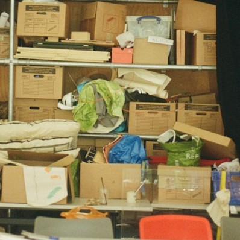
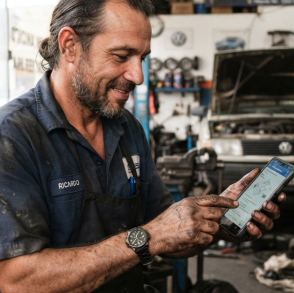
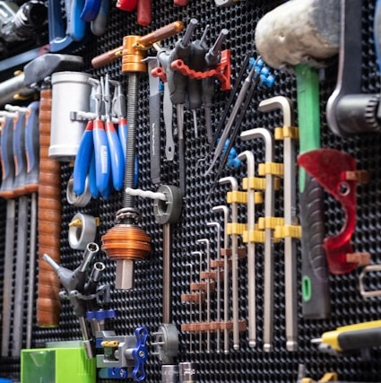
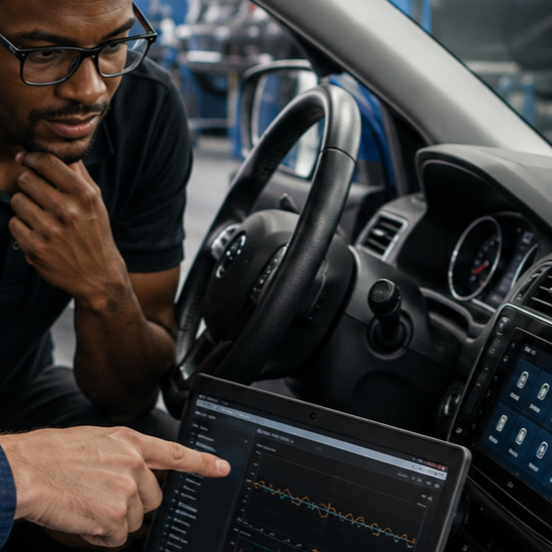
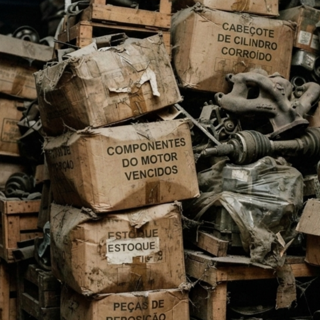
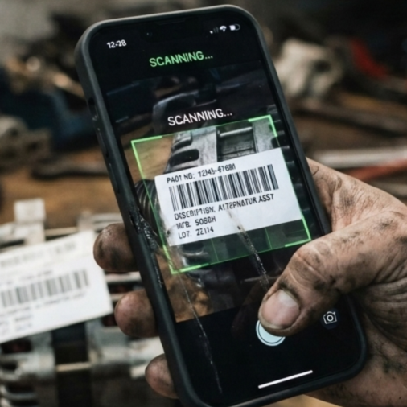
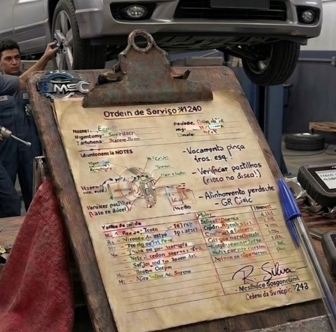

💼 Qual é o seu cargo ou função principal na oficina?
1. Qual o maior obstáculo na rotina de trabalho dos funcionários hoje?

2. Como o recurso de voz por Inteligência Artificial ajudaria mais no seu cargo?

3. O que você gostaria de ver melhorado na sua rotina de trabalho?

4. Como você avalia a atual utilização da tecnologia em sua oficina?

5. Qual o maior prejuízo que um estoque desorganizado causa?

6. Qual a melhor função para um aplicativo de estoque?

7. Qual a maior dificuldade do sistema tradicional de controle?

8. Qual o maior desafio para a equipe usar o aplicativo?
Obrigado por colaborar com a nossa Pesquisa. Seus dados foram salvos no painel. ⚠️ Atenção: Os dados são temporários! Anotaremos as informações no caderno ou Documento oficial do Projeto.